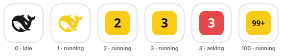

多个会话并行时按优先级聚合 —— asking > running > done > idle，一次只显示最重要的那个状态。
会话空闲，深色鲸鱼安静地待在标签页上，不打扰。
Agent 正在工作，明黄色一路跟随，任务进行中一目了然。
ask_user_question 或权限审批阻塞时红黄交替闪烁——切回来之前也不会错过。
回合结束闪现绿色，驻留片刻后自动回到待机。
asking 与 done 的最短驻留时间可配置（askingHoldMs / doneHoldMs）：即使用户秒答、回合瞬间结束，状态也不会一闪而过。
不止一个 Agent 在工作时，鲸鱼让位于满幅数字块：实时显示活动会话数，沿用状态配色与特效渲染，钉住的小标签页里也清晰可读。

浏览器从不播放 favicon 里的 SVG 动画——所以本页的每个特效都和插件一样，由 JavaScript 逐帧重建。点击任意卡片在下方试玩。
开启后，浏览器标签页上真实的 favicon 会跟随这里的配置实时变化——正是插件在 DSH 页面里做的事。看看你的标签页 →
副色仅被 blink / breath 使用；未提供时自动派生更深一档的同色。
DSH ≥ 0.1.2 时，Web GUI 的「设置 → 插件 → 插件配置」里会出现一张 Favicon indicator 卡片：每个状态一行，特效、颜色、周期全部可视化编辑，还带实时色板预览。
改动保存进 profile 的 settings.yaml，并在约 1 秒内同步到正在运行的标签页——无需重启宿主，也无需刷新页面。
插件只附带一个 base.svg 模板；浏览器每帧把 __COLOR__ 占位符替换为状态色，再编码成 data:image/svg+xml URI。没有按颜色预制的图片文件，也没有多余的请求。
标签页里的 favicon 不播放 SVG 自带的 CSS 动画。插件用 requestAnimationFrame 每帧重建图标并替换 href；标签页转入后台时退回墙钟帧，动画不冻结，回到前台恢复全速。
状态端点每秒轮询一次，宿主重启后自动重连。宿主停止时标签页不会丢图标——启动时缓存的离线安全 data: URI 副本会接管，首次成功轮询即恢复实时图标。
Chrome / Edge / Firefox 获得完整的实时颜色与特效；Safari 能渲染 SVG favicon，但动态更新受限（尽力而为）。
标准 DSH bundle 插件，安装后 GUI / TUI profile 通过 cordis patch 层自动生效。
dsh plugin --profile web add dsh-web-icon-indicator@latest
直接跟踪仓库最新提交，适合开发与预览。
dsh plugin --profile web add github:waknow/dsh-web-icon-indicator